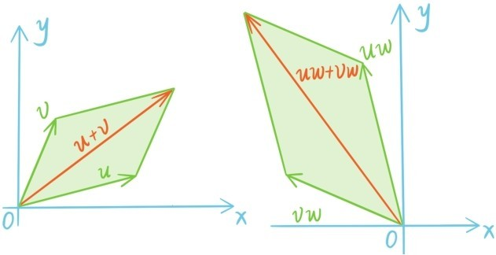

复数的加法乘法运算也满足五大运算定律。首先加法交换律和结合律自然成立，这可以直接由向量的加法交换律和加法结合律推出。
接下来说明乘法交换律也成立。注意两个复数u和v相乘就是模长相乘，幅角相加，因此uv和vu的模和幅角都是相等的，而复数是由模与幅角决定的，所以uv=vu。乘法结合律也可以类似地说明。

加法乘法分配律也可以用复数乘法的几何意义来解释。u和v相加可以用平行四边形法则来确定，乘以w的效果是一个旋转加一个伸缩，而旋转和伸缩都保持平行四边形形状不变，所以
(u+v)w=uw+vw。
现在可以总结复数的算术本质了：
（1）复数中有两个特殊的数，0与1，有两个基本运算：加法与乘法，任何两个复数相加或相乘还是复数；
（2）复数的加法与乘法满足五大运算定律；
（3）每个复数和0相加都不会变，每个复数和1相乘也都不会变；
（4）每个复数都存在一个相反数，相反数也是复数，复数和它的相反数相加等于0；
（5）每个非零复数都存在一个倒数，倒数也是复数，非零复数和它的倒数相乘等于1。
所以，可以放心地接纳虚数作为新成员，把数的家园扩充为复数。
关于复数的算术性质，还有一个关键点需要补充。复数 =a-bi为复数z=a+bi的共轭复数。共轭变换z→ 其实就是坐标绕x轴旋转180°。共轭变换最重要的性质就是保持加法乘法
这可以看成是复数的算术对称性。若z=r(cosθ+sinθi)，则 =r(cosθ-sinθi)，所以z· =|z|2。
提问时间
8.3.1 求-1+4i和2+3i的倒数。（提示：利用共轭复数）
8.3.2 对于任何复数z1，z2，证明：若z2≠0，证明：。
8.3.3 已知|z|1=2，|z|2=3，且Re，求|z1+z2|。
8.3.4 如果让虚数i参与到有理数的加减乘除运算之中，会形成什么样的算术系统？